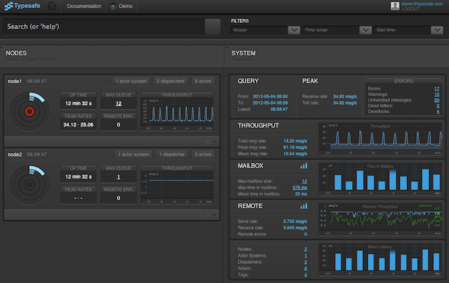
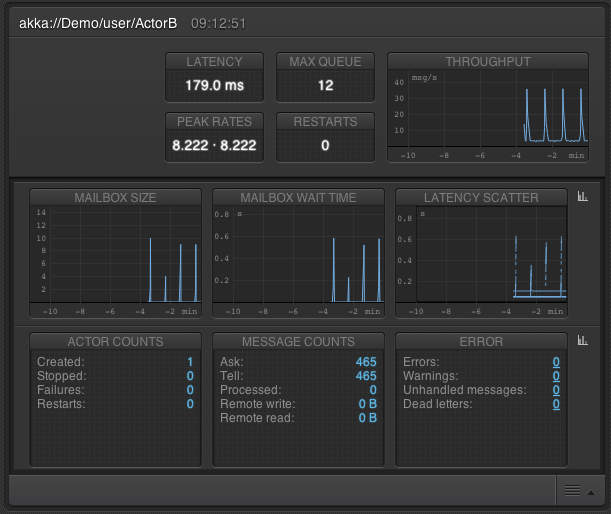

Summary of the Typesafe Console¶
The Typesafe Subscription includes the Typesafe Console, an enterprise-grade dashboard for monitoring your application built on the Typesafe Stack, including Akka event-driven middleware. The Typesafe Console is exclusively available to Typesafe Subscription customers.
The Typesafe Console is a tailor-made tracing and monitoring solution for event-driven Akka actor based systems. The Typesafe Console captures the events that comprise your application’s asynchronous processing, links those events into meaningful trace flows across actors and remote nodes, and makes this information actionable to developers and operations staff through a rich web-based user interface.
The Typesafe Console provides insight into usage trends and performance characteristics of the running system. The Console enables your staff to optimize system performance and detect bottlenecks before they become a problem, but also to understand reasons for current or historical problems.
Typesafe Console monitoring has been carefully designed to be always active in high-volume production environments with a minimal impact on performance. For high transaction rate systems it provides measurement sampling to reduce the overhead and amount of data.
In addition to the web user interface, aggregated metrics and detailed trace flows are also accessible through a REST and JMX API, for easy integration with third party monitoring and operations tools. Both historical and current monitoring information is available, which makes it possible to compare across time and analyze trends. The information can be scoped: by node, groups of actors, or even drilling down to individual actors.
The Typesafe Console includes probes to collect the following information from a Typesafe Stack based system:
- message rates and peaks
- individual trace events linked as trace trees or spans
- latency between predefined or user defined points
- latency distributions
- actor supervisor hierarchies
- actor mailbox queue size and delays
- actor message dispatcher status
- status of remoting and system errors
- metadata about the system
- JVM and OS health
You can look at the console for a live demo application here.
Please contact info@typesafe.com for more information or trial of the Typesafe Console.
Graphical Console¶
This is what the dashboard looks like. Key metrics visualized in nice-looking graphs, animations and numbers.
And here’s a closer look at the system overview, which displays information about the whole system.
A node corresponds to a JVM. The circle gives a quick overview of the current health of the node, and if any errors have occurred. Details about the errors, including the full tree of trace events are one click away.
Actors can be grouped into logical units using tags, and statistics are aggregated for all actors associated with a given tag.
Another interesting way of grouping statistics for the actors is by their message dispatcher. Insight to the dispatcher status, such as number of active threads, is also available.
At the lowest level of detail you can see individual actors.
How to Find a Bottleneck¶
Let’s walk through one of many useful features of the console.
Mailbox queues are interesting to monitor in an actor system. An increasing number of messages waiting in mailboxes is an indication of a problem. If mailboxes are growing constantly it is a fatal problem (memory will be exhausted).
Directly in the system overview pane you see Max mailbox size. In this example, the value is not very high, but several messages are waiting in the queue. The Max time in mailbox also makes us curious, because a half second of waiting time is more than we would expect.
We click on the Max mailbox size or Max time in mailbox value to go directly to the actor with the potential problem.
In the graphs for the mailbox we can see that we have peaks in both the size and wait time, and it looks like they correlate with the peaks in the message throughput. The good news is that the actor is capable of processing the queue before the next peak of messages. The mailbox size is not increasing continually so it’s not a big worry, but the application would not be able to handle a sustained load corresponding to the message rate of the peaks.
Let’s compare with another actor. As you see the mailbox graphs for ActorA and ActorB looks very different. Note the scale of the y-axis.
Technical Details¶
The monitoring backend is highly influenced by a paper from Google which outlines Dapper, a highly scalable tracing service for distributed systems.
In short, metadata is added to the messages as they flow through the system, both across component boundaries as well as across the network. This means that it is possible to follow message chains in the distributed system. All these trace events are captured in a very efficient way using a combination of thread local state and local buffering before they are emitted to storage and off-line analysis.
Trace data is collected in the application using an instrumented version of Akka. The trace events are written to storage and consumed by an analysis server to produce aggregated statistics. The analytics is performed close to real-time, but off-line from the application. The information is visualized in the graphical console.
All information is also available through a REST API, which is useful for integration with other monitoring tools or for developing your own dashboard. Most information is also available as JMX MBeans. Please see the REST API Description for more on the available APIs.
There are, at present, three ways of persisting the trace events:
- Writing directly to MongoDB
- Sending to a remote actor, which writes to MongoDB
- Sending to a Flume agent, which transports to a Flume collector, which writes to MongoDB
A span is the path between two trace events; especially the duration between these events is interesting. One typical, built-in, span type is the time to send and process messages for actors. It’s also possible to define application specific markers for spans that start and end in any location in the message trace, i.e. it may span over several actors. Statistics will be calculated for this in the same way as the built-in span types.
The graphical console has been developed in collaboration with Zenexity and the console itself is built with Play 2.0 and Scala.
The tracing and monitoring solution has been developed with Scala, Akka 2.0, and Play2 Mini.
Please see the full documentation of the Typesafe Console for more information.